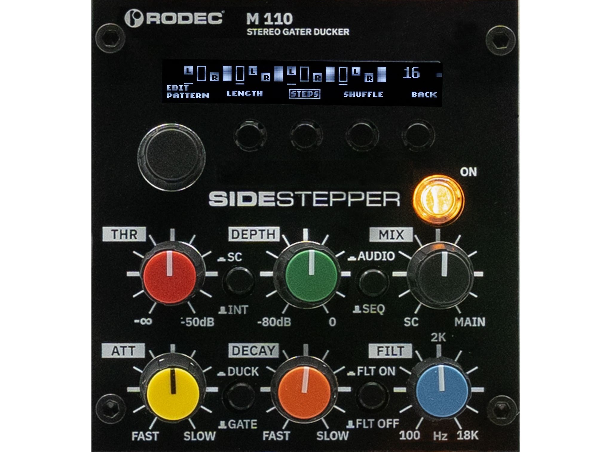

Rodec M-110 SideStepper

SideStepper Module Manual
Stereo 100-Series Dynamics & Rhythmic Sequencer
The SideStepper is a high-performance, stereo 100-series module designed to bridge the gap between classic analog dynamics and modern rhythmic sequencing.
1. General Specifications
- Module Type: Stereo 100-series Module.
- Analog Core: Stereo Analog discrete FET-controlled and FET-based VCA amplifier.
- Compatibility: Designed for the Rodec ONE desktop workstation or the Rodec 500-to-100 Series Adapter.
- Factory Presets: A comprehensive list of factory presets can be accessed separately here.
2. Step Sequencer Section
The integrated digital step sequencer generates a rhythmic analog stereo pulse (beep/tone) that acts as an internal sidechain source for the analog module, driving precise gating or ducking effects.
2.1 Home Screen & Main Navigation
When not in an active edit mode or settings menu, the Home Screen displays the active pattern name.
- Selecting Patterns: Rotate the Encoder to scroll through saved pattern names.
- Quantized Switching: Newly selected patterns trigger seamlessly at the start of the next measure (determined by the MIDI Bar Length setting), allowing on-the-fly, quantized pattern transitions during live performance.
- Soft Key Options:
Edit: Enters the pattern/step editing interface.
Mute: Instantly mutes the sequencer output (stops pulses from triggering the analog sidechain).
Menu: Opens the system settings.
2.2 Editing Patterns & Steps
Pressing Edit or pushing the Encoder Button enters the editing interface. Pressing the Encoder Button toggles directly between Step Edit Mode and Pattern Edit Mode.
A. Step Edit Mode
Scroll through individual steps in the sequence using the encoder, and adjust specific parameters using the dedicated button beneath each function:
- ON / OFF (State): Activates or deactivates the pulse for the selected step. Stereo Mode cycles through L+R (Center), L Only, R Only, and OFF. Mono Mode toggles step ON or OFF simultaneously for both channels.
- Length: Adjusts the pulse duration for the selected step.
- Nudge: Fine-tunes the start timing (micro-timing) of the step.
B. Pattern Edit Mode
Applies global adjustments to the entire active pattern:
- Length: Globally scales step lengths across the entire pattern.
- Steps: Sets the active length of the pattern (1 to 16 steps max).
- Shuffle: Adjusts swing/timing balance. Range: -46 to +46 (0 = tight, unshifted timing).
2.3 Loading & Saving Patterns
- Exiting Edit Mode: Press the dedicated Back button (accessible from both Step and Pattern edit screens).
- Saving Changes: If the active pattern was modified, a prompt will ask if you wish to save: Overwrite (saves over current pattern) or Save New (stores in a new memory slot).
2.4 Menu & System Settings
To enter the settings menu, select Menu from the Home Screen.
- Navigation: Rotate the Encoder to scroll through options.
- Editing: Press the Encoder to select/adjust a value, and press it again to store the value and return to menu navigation.
3. Gater / Ducker Section (Analog)
Tactile control over the discrete FET response.
3.1 Control Interface
- Threshold: Sets the level at which the circuit engages (Gate opens or Ducker attenuates).
- Depth: Determines the maximum gain reduction—from subtle movement to total silence.
- Mix: Blends the dry audio with the sidechain trigger signal (allowing the internal Gate Tone pulse or external sidechain to be layered directly into the audio output).
- Attack: Sets the speed of the initial envelope (from snappy transients to slow swells).
- Decay: Controls the release time of the envelope after the trigger stops.
- Filter: A dedicated Band-pass filter (18Hz–22kHz) for the sidechain signal, ensuring reaction only to specific frequencies.
3.2 Logic & Routing (Pushbuttons)
- SC / INT: Toggle between external sidechain/sequencer response or internal audio-driven response.
- AUDIO / SEQ: Selects the trigger source: the physical Sidechain Audio Input or the internal Step Sequencer.
- DUCK / GATE: Switches VCA behavior between gain reduction (Ducking) or signal opening (Gating).
- FILT ON / OFF: Engages or bypasses the sidechain Band-pass filter.